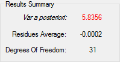
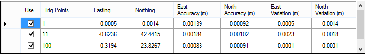
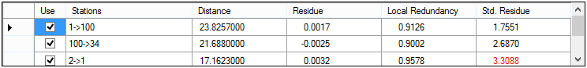

Análise do processamento
No SolNNet são usadas várias ferramentas para analisar os resultados numéricos do processamento da rede.Detecção de erros grosseiros
A análise de erros grosseiros é fundamental em projectos em que são utilizados testes estatísticos nos dados observados. Para detectar este tipo de erros que não foram detectados previamente ao ajustamento, são utilizados os seguintes testes estatísticos:- Teste global de razão das variâncias - Teste bilateral qui-quadrado da razão de variâncias: a priori e a posteriori. Pode indicar erros grosseiros no processamento ou variância das observações mal estimada.
- Teste data snooping - Teste de Baarda, para detecção individual de erros grosseiros nas observações.
Sumário do processamento
O sumário do processamento destaca 3 valores indicativos da qualidade da rede e observações.- Variância a posteriori - Colorida a vermelho ou verde caso, chumbe ou passe respecivamente, no teste global da razão das variâncias.
- Média dos resíduos.
- Graus de liberdade.

Resíduos chumbam no teste global da razão das variâncias.
Resíduos chumbam no teste global da razão das variâncias.
Tabelas de resíduos
Qualquer uma das tabelas de resíduos têm a propriedade de se poder ordenar por qualquer coluna, bastanto para tal clicar no nome da coluna que se encontra no topo de cada. Tabela de estações indica-nos os seguintes dados:- Nome da estação - A preto as estações trigonométricas, a verde as estações de controlo, a vermelho as estações fixas;
- Coordenadas Processadas (Easting, Northing);
- Desvio padrão associado a cada coordenada;
- Resíduos acumulados, i.e., deslocamentos de cada coordenada.

As tabelas das distâncias e direcçoes indica-nos os seguintes dados:
- Estações;
- Distância ou Direcção;
- Resíduo;
- Redundância local;
- Resíduos estandarizados - A vermelho, os resíduos que não passam no teste data snooping.

Caso queira retirar alguma observação do processamento, basta desligar as caixas de selecção das observação
a retirar e clicar em Update. A janela irá fechar-se e a lista de observações utilizadas
é actualizada.